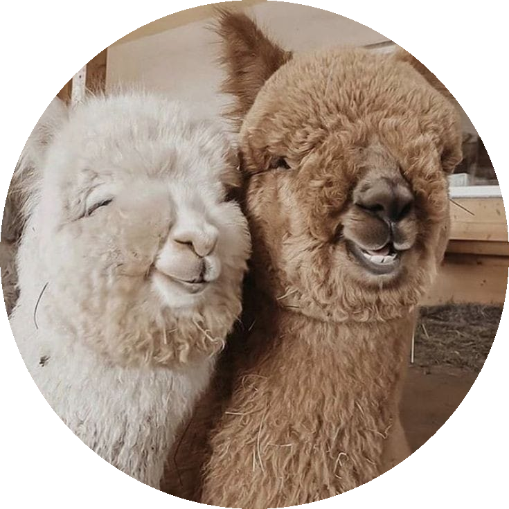

A alpaca é o menor camelídeo, com uma altura próxima a um metro e um peso que varia
entre 45 e 80 kg.
Tem um corpo esbelto e um pescoço longo, com um casaco de lã que pode crescer até vários centímetros e
que varia de tom.

Sem dúvida, uma característica surpreendente é sua capacidade de cuspir.
Normalmente, esses animais
costumam recorrer a essa prática para mostrar raiva ou como mecanismo de defesa.Atualmente, as Alpacas vivem, principalmente, no norte da Argentina e do Chile e
nos territórios do
Peru - onde está o maior número de exemplares - e da Bolívia. Porém, algumas espécies podem ser
encontradas também nos Estados Unidos, no Canadá, na Nova Zelândia e na Austrália.
Sobre a autora:
Ana Carolina, 16 anos. Mora em São Paulo, capital. Adora viajar e curtir com
familiares e amigos. Seu estilo de musica favorito é MPB e R&B e adora filmes de romance! Sendo seu
animal favorito a alpaca.